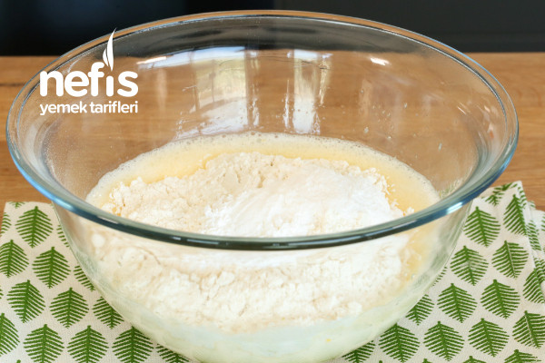
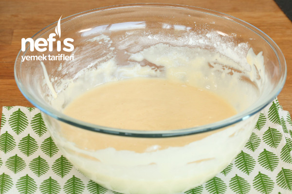
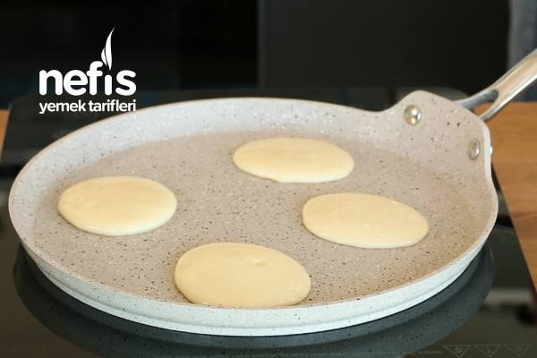
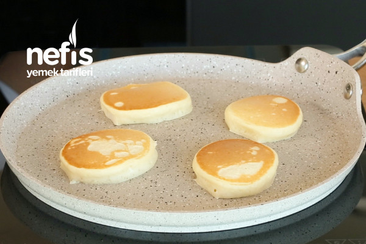
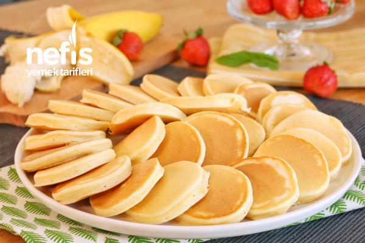

Kahvaltılarınızda severek tüketeceğiniz, reçel, marmelat gibi tatlılarla lezzetlendireceğiniz, kaşık dökmesi olarak da
bilinen ama tatlı olan bir tarif.
Çocuklarınız pankek tarifine bayılacaklar. Günümüzde olan pankek tavaları ile farklı
hayvan şekilleri verebileceğiniz böylelikle de çocuklarınızın
dikkatini çekecek olan pankek tarifini mutlaka
denemelisiniz.Tavada pankekleriniz pişerken sabırsızlanan çocuklarınız, bir tarafta kaynayan çaydanlığınız
ile kahvaltı
masalarınız renklenecek. Pankek nasıl yapılır? sorunuzun cevabını bulacağınız tarifimizi denemeyi ve defterinize
eklemeyi unutmayın.
Deneyeceklere şimdiden afiyet olsun. :)
Tarif: Elif Atalar
Hazırlayan: Merve Akçiçek
Kaç Kişilik : 2-4 Kişilik
Hazırlanma Süresi : 10 dakika
Pişirme Süresi : 15 dakika
- 2 adet büyük boy yumurta
- 1 su bardağı süt
- 1,5 su bardağı un
- 1 paket kabartma tozu
- 1 paket vanilya
Pişirme aşamasında kullanmak için :
Servis Önerisi :
- Pankek yapmak için öncelikle yumurtalar ve şekeri uygun bir karıştırma kabına alarak iyice çırpalım.

-
Süt, un, kabartma tozu, vanilya ilave çırpma teli ile çırpalım. Siz dilerseniz mikser ile de çırpabilirsiniz.
Kek kıvamından biraz daha koyu olacak şekilde hamur hazırlayalım.

-
Teflon ya da yapışmaz bir tavaya az sıvı yağı dökelim, fırça yardımı ile her tarafına dağıtalım.
Sıvı yağı az kullanmak
pankek yapmanın püf noktalarındandır. Dilerseniz peçete ile de tavaya dağıtabilirsiniz.

-
1 büyük kaşık hamur dökülerek hamurun kendi kendine yayılmasını bekleyelim.
Üzeri göz göz olmaya başlayan pankeklerimizi spatula yardımı ile ters çevirelim. Diğer taraflarını da pişirelim.
-
Her iki tarafı da pişen pankeklerimizi servis tabağına alalım.

-
Üzerine pudra şekeri serpilerek zevkinize göre muz, kivi, çilek, çikolata, bal, sürülebilir çikolata, reçel ile servis
edebilirsiniz.

Afiyet olsun! :)